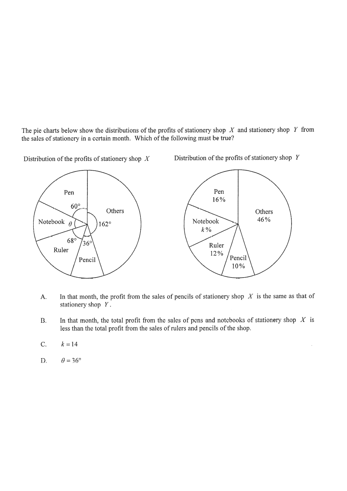

Pie chart X is drawn to scale (angles in degrees); pie chart Y shows percentages.
Scroll the solution on the right — the diagram highlights the matching part.
The pie charts below show the distributions of the profits of stationery shop \(X\) and stationery shop \(Y\) from the sales of stationery in a certain month. Which of the following must be true?

Shop \(X\) (angles, so the whole circle is \(360^\circ\)):
Pen \(= 60^\circ\), Pencil \(= 36^\circ\), Ruler \(= 68^\circ\), Notebook \(= \theta\), Others \(= 162^\circ\).
Shop \(Y\) (percentages, so the whole circle is \(100\%\)):
Pen \(= 16\%\), Pencil \(= 10\%\), Ruler \(= 12\%\), Notebook \(= k\%\), Others \(= 46\%\).
Sum of all angles at the centre \(= 360^\circ\):
\(60^\circ + 36^\circ + 68^\circ + \theta + 162^\circ = 360^\circ\)
\(326^\circ + \theta = 360^\circ\)
\(\theta = 360^\circ - 326^\circ = \mathbf{34^\circ}\)
Sum of all percentages \(= 100\%\):
\(16\% + 10\% + 12\% + k\% + 46\% = 100\%\)
\(84\% + k\% = 100\%\)
\(k\% = 16\% \Rightarrow k = \mathbf{16}\)
Option A claims the two amounts are equal. But each pie chart only gives a proportion of that shop's own total profit — the two total profits need not be equal.
Pencil for \(X\): \(\dfrac{36^\circ}{360^\circ} = 10\%\) of shop \(X\)'s profit.
Pencil for \(Y\): \(10\%\) of shop \(Y\)'s profit.
So \(0.10\,P_X\) versus \(0.10\,P_Y\) — these are equal only if \(P_X = P_Y\), which is not given.
Compare shares of the same shop \(X\), so the totals cancel.
Pens + Notebooks: \(60^\circ + \theta = 60^\circ + 34^\circ = 94^\circ\)
Rulers + Pencils: \(68^\circ + 36^\circ = 104^\circ\)
\(\dfrac{94}{360} \;<\; \dfrac{104}{360}\)
The total profit from pens and notebooks of shop \(X\) is less than the total profit from rulers and pencils of the shop.
Therefore option B must be true.